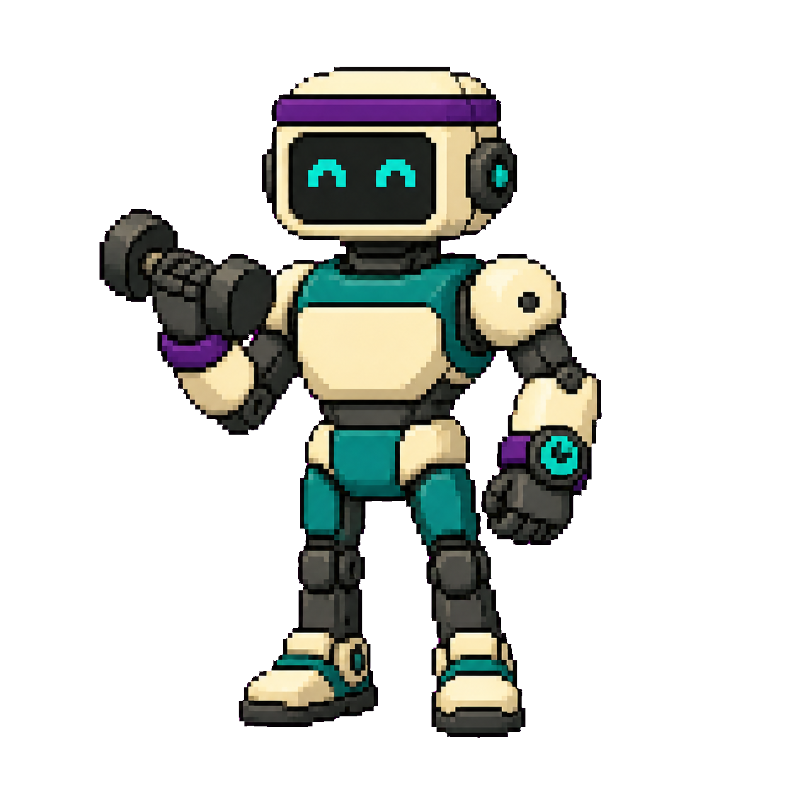
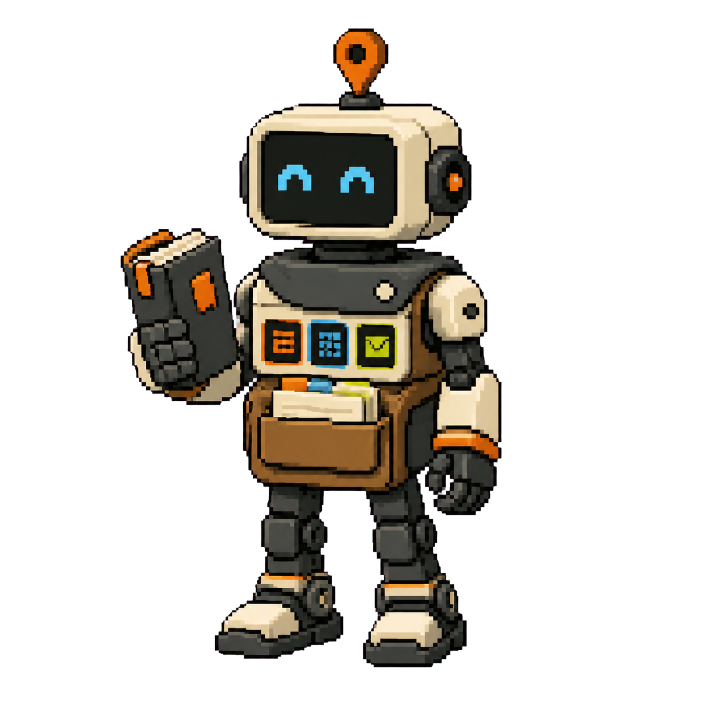
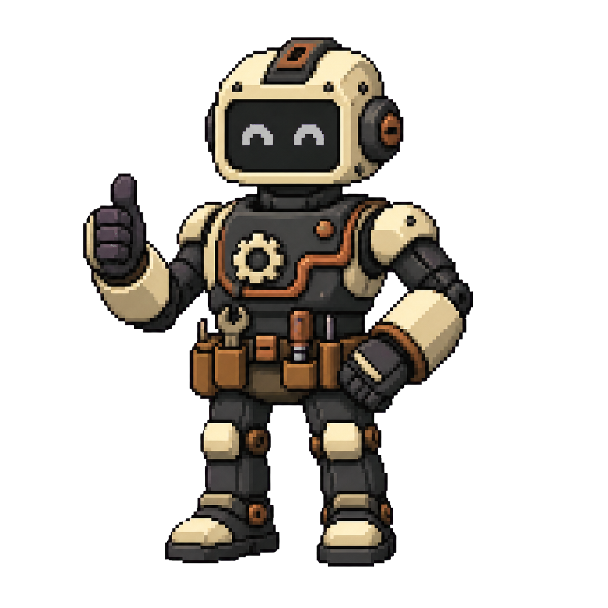

Where should the robot look?
FIELD NOTES · AUGUST 202601
My team of personal productivity robots
I stopped asking AI questions.
I started giving it jobs.



MEET THE FIELDGUIDE · BACKBONE 1/202
One conversation became an event launch.
1-hour conversation about a possible retreat
→
→
▤Collaborator’s agreement▦Budget▣Sales page☷Launch plan
TIME SAVEDDays of work → 20 minutes
LAUNCH-READYWith a few minor tweaks
QUALITYMet both our standards
THE FIELDGUIDE · BACKBONE 2/203
The robot suggested a conditional commitment mechanism.
It solved my biggest launch bottleneck: committing to an event before I knew whether enough people would come.
€250deposit
→10commitments in 3 weeks
→GO / NO-GOtest real demand first
WHAT HAPPENED NEXT11deposits in the first two weeks
MEET THE FIELDGUIDE · THREE SYSTEMS04
Backbone worked because the Fieldguide combines three systems.
=
Whose move? When should it return?
Across every inbox.
Together, they give the robot enough context to take credible action.
THE FIELDGUIDE · CONTEXT05
THE FIELDGUIDE
▤1 · Context☷2 · Projects✉3 · Messages
Context Engineering: I taught the robot where to look.
8 YEARSof business contextmarketing · brand · purpose · vision · mission · values · operations
→
10useful Google Docs
Shared in Google Docs, so collaborators and robots use the same canonical map.
→
▤A COMPACT MAP OF THE BUSINESSCurated intelligence for every robot job that follows.
I’ve done marketing projects, brand workshops and purpose / vision / mission / values workshops. None came close to understanding my businesses as well as this robot.
THE FIELDGUIDE · PROJECTS06
THE FIELDGUIDE
▤1 · Context☷2 · Projects✉3 · Messages
Project management is a conversation now.
“Backbone retreat is waiting on Gabe. Finance needs my review. Coliving Event can wait until next week.”
☷ THE FIELDGUIDE ORGANISESWhose move?What matters now?When should it return?
I tell the Fieldguide what’s changed. It organises everything and brings each project back when it needs my attention.
THE FIELDGUIDE · MESSAGES07
THE FIELDGUIDE
▤1 · Context☷2 · Projects✉3 · Messages
For 15 years, inbox overload was one of the most consistent pain points in my life.
WhatsAppTelegramTwitter DMsEmail
too many messages→fall behind→shame→avoidance
I let down friends and missed business opportunities.
✉ NOW I ASK THE ROBOT
“Which messages do I need to pay attention to?”
- Clients get the fast replies they need.
- I’m reaching out to friends more.
- I am liberated from inbox anxiety.
THE FIELDGUIDE · THREE SYSTEMS TOGETHER08
THE FIELDGUIDE
▤1 · Context☷2 · Projects✉3 · Messages
A WhatsApp message becomes a credible budget answer.
☎ WhatsApp message“What would it do to the budget if we extend the retreat by a day?”
THE ROBOT DRAFTSa credible answerwithout me re-explaining the situation
It knows who is asking, what the project is, and how we do the work.
NEW ROBOT · 0209
FITNESS TRAINERA DIFFERENT ROBOT
81 videos became today’s workout.
I ASKED THE ROBOT TO
Transcribe every video, build an interactive, navigable exercise database with video demos, and add a workout and progress tracker.
6h 45m≈64,300 words
TODAY
Workout
5ten-step exercise ladders
▶click-to-watch demos
↗history + progress
20 logged entries alreadyIt turned scattered instruction into something I can follow and track.
NEW ROBOT · 0310
COACHING SUPERVISORWITH CLIENT CONSENT
I feel myself getting better with every call.
CLIENT-CONSENTED SESSION RECORDone source · two outputs
PRIVATE SUPERVISION FOR MEprecise feedback · 60-second next-call brief
STRENGTHS
- Finds the live pattern
- Restores agency without blame
- Turns abstraction into experiments
DEVELOPMENT EDGES
- Slow down before becoming useful
- Stay longer with emotion
- Land the plane
When I leave a call with doubt or discomfort, the robot points to the moment, names the blind spot, and gives me something precise to practise next time.
NEW ROBOTS · WORK IN PROGRESS11
Now I have enough space to tackle the ambitious stuff.
FINANCE HOMEPersonal + two businesses
One clear view, with budgets, goals and performance tracking.
CASA TILO OPERATIONSReplace the subscription patchwork
A custom operations system that makes new automations much easier.
These are my two big works in progress.
HOW TO DELEGATE TO A ROBOT12
Turn tedious work into a job description.
Copy. Paste. Check. Chase. Reformat. Reconcile.
Relevant history, examples and source material.
What should happen, how it should work, the boundaries, and what good looks like.
Explain the job to a capable colleague. Technical know-how is optional.
Use it in real life. Notice what is missing. Embellish it gradually.
← → navigate · O overview · F fullscreen
Slides